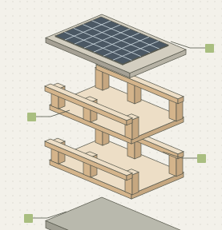

معماری
از برنامهٔ فیزیکی تا نسبت بازشوها و دید اتاقها.
معماری، سازه و تأسیسات در یک دفتر. خانههای چوبی را از نخستین طرح تا جزئیات اجرا طراحی میکنیم.

هر تخصص پیش از ساخت وارد گفتوگو میشود تا اتصال میان سازه، نور و فضا از ابتدا حل شود.
از برنامهٔ فیزیکی تا نسبت بازشوها و دید اتاقها.
ترکیب قطعات چوبی، اتصالات و مسیر انتقال نیرو.
مسیرهای آب، برق و تهویه در کنار سازه.
نور، سایه و آسایش حرارتی در فصلهای مختلف.
نقشهها و جزئیات در یک مجموعهٔ هماهنگ.

معماران و طراحان سازه از همان جلسهٔ اول با هم کار میکنند. هدف، ساختمانی است که جزئیات آن در طراحی دیده شده باشد.
موقعیت زمین، جهت نور و نیازهای روزانه را بررسی میکنیم.
پلان و سازه را بهصورت همزمان توسعه میدهیم.
اتصالات، پوشش و تأسیسات را در نقشهها هماهنگ میکنیم.
هنگام اجرا جزئیات را با شرایط واقعی تطبیق میدهیم.
با اطلاعات اولیهٔ زمین و تصویری از نوع خانهای که میخواهید.
درخواست و وضعیت فعلی بنا را بنویسید تا دامنهٔ کار بررسی شود.
پس از شناخت زمین، متراژ و مشخص شدن حدود خدمات.
موقعیت، مساحت تقریبی و مهمترین نیازتان را در یک پیام بنویسید.
 انتخاب این طرح
انتخاب این طرح